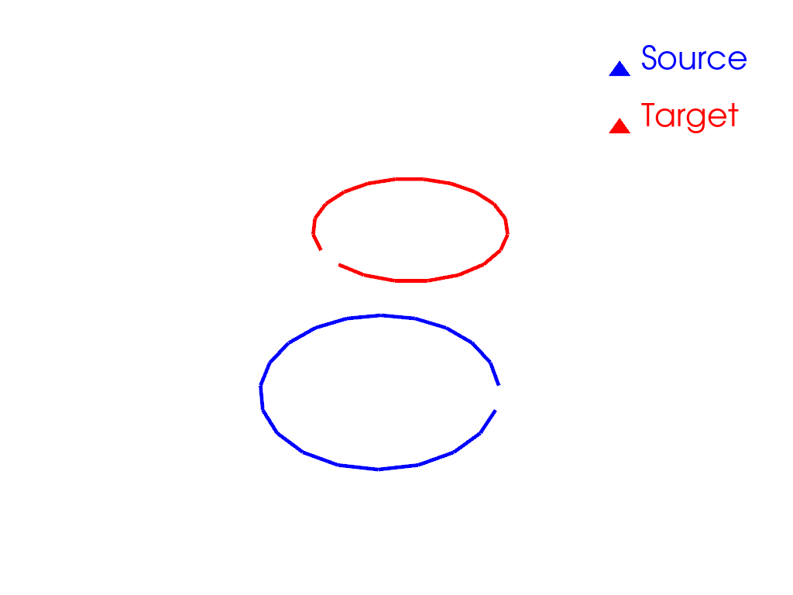

Note
Go to the end to download the full example code
Rigid alignment in 2D
This is an example of rigid alignment in 2D for meshes with points in dense correspondence.
import pyvista as pv
import torch
from pyvista import examples
import skshapes as sks
We load two toy shapes in 2D: wireframe meshes representing circles. To be able to see orientations, we remove one edge from each circle. The points of both circles are in dense correspondence.
source = sks.PolyData(examples.download_human())
target = sks.PolyData(examples.download_doorman())
# Load the circles
source = sks.Circle()
target = sks.Circle()
# Remove one edge from each circle
source.edges = source.edges[:-1]
target.edges = target.edges[:-1]
/opt/hostedtoolcache/Python/3.11.11/x64/lib/python3.11/site-packages/jaxtyping/_decorator.py:562: UserWarning: Mesh has been cleaned and points were removed. point_data is ignored.
return wrapped_fn_impl(args, kwargs, bound, memos)
Rigid motion are parametrized by a rotation and a translation. We apply a rigid motion to one of the circles.
theta = 0.75 * torch.pi # angle in radians
translation = torch.tensor([1.0, 0.8]) # translation in the plane
# In 2D, the parameter is a 3D vector: [theta, tx, ty]
parameter = torch.cat([torch.tensor([theta]), translation])
# Apply the rigid motion to the circle
rigid_motion = sks.RigidMotion()
source = rigid_motion.morph(
shape=source,
parameter=torch.cat([torch.tensor([theta]), translation]),
).morphed_shape
plotter = pv.Plotter()
plotter.add_mesh(
source.to_pyvista(),
color="blue",
show_edges=True,
line_width=5,
label="Source",
)
plotter.add_mesh(
target.to_pyvista(),
color="red",
show_edges=True,
line_width=5,
label="Target",
)
plotter.add_legend()
plotter.show()

Registration
from skshapes.loss import L2Loss
from skshapes.morphing import RigidMotion
from skshapes.tasks import Registration
loss = L2Loss()
model = RigidMotion(n_steps=5)
registration = Registration(
model=model,
loss=loss,
n_iter=5,
verbose=True,
)
registration.fit(source=source, target=target)
Initial loss : 4.99e+01
= 4.99e+01 + 1 * 0.00e+00 (fidelity + regularization_weight * regularization)
Loss after 1 iteration(s) : 4.30e-13
= 4.30e-13 + 1 * 0.00e+00 (fidelity + regularization_weight * regularization)
Loss after 2 iteration(s) : 4.30e-13
= 4.30e-13 + 1 * 0.00e+00 (fidelity + regularization_weight * regularization)
Loss after 3 iteration(s) : 4.30e-13
= 4.30e-13 + 1 * 0.00e+00 (fidelity + regularization_weight * regularization)
Loss after 4 iteration(s) : 4.30e-13
= 4.30e-13 + 1 * 0.00e+00 (fidelity + regularization_weight * regularization)
Loss after 5 iteration(s) : 4.30e-13
= 4.30e-13 + 1 * 0.00e+00 (fidelity + regularization_weight * regularization)
<skshapes.tasks.registration.Registration object at 0x7fa888a84d50>
Animation
path = registration.path_
plotter = pv.Plotter()
actor = plotter.add_mesh(
source.to_pyvista(), color="blue", show_edges=True, line_width=5
)
plotter.add_mesh(
target.to_pyvista(), color="red", show_edges=True, line_width=5
)
plotter.open_gif("rigid_registration.gif", fps=3)
for _i, shape in enumerate(path):
plotter.remove_actor(actor)
actor = plotter.add_mesh(
shape.to_pyvista(), color="blue", show_edges=True, line_width=5
)
plotter.write_frame()
plotter.close()
Total running time of the script: (0 minutes 4.622 seconds)